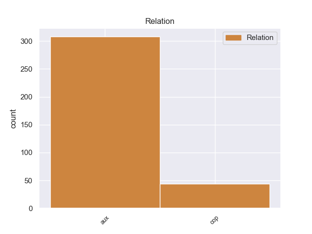
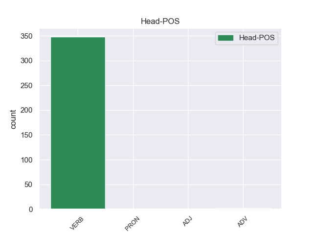
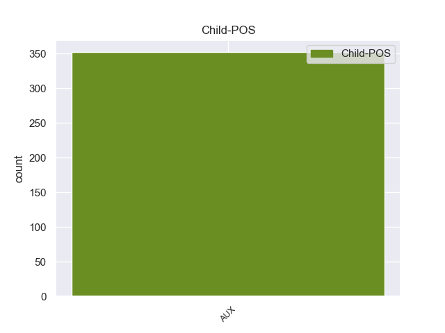

Distribution of features within this leaf



Agreement Rules sorted by frequency.
When the dependent token is None
1 Αυτό _ _ _ _ 0 _ _ _
2 μπορεί μπορεί AUX _ Aspect=Imp|Mood=Ind|Number=Sing|Person=3|Tense=Pres|VerbForm=Fin|Voice=Act 5 aux _ _
3 να _ _ _ _ 0 _ _ _
4 μην _ _ _ _ 0 _ _ _
5 οδηγήσει οδηγήσει VERB _ Aspect=Imp|Mood=Ind|Number=Sing|Person=3|Tense=Pres|VerbForm=Fin|Voice=Act 0 _ _ _
6 σ _ _ _ _ 0 _ _ _
7 τη _ _ _ _ 0 _ _ _
8 λήξη _ _ _ _ 0 _ _ _
9 του _ _ _ _ 0 _ _ _
10 εν _ _ _ _ 0 _ _ _
11 λόγω _ _ _ _ 0 _ _ _
12 ζητήματος _ _ _ _ 0 _ _ _
13 αλλά _ _ _ _ 0 _ _ _
14 , _ _ _ _ 0 _ _ _
15 σ _ _ _ _ 0 _ _ _
16 τη _ _ _ _ 0 _ _ _
17 μορφή _ _ _ _ 0 _ _ _
18 υπό _ _ _ _ 0 _ _ _
19 την _ _ _ _ 0 _ _ _
20 οποία _ _ _ _ 0 _ _ _
21 την _ _ _ _ 0 _ _ _
22 λάβαμε _ _ _ _ 0 _ _ _
23 , _ _ _ _ 0 _ _ _
24 αυτή _ _ _ _ 0 _ _ _
25 η _ _ _ _ 0 _ _ _
26 αίτηση _ _ _ _ 0 _ _ _
27 άρσης _ _ _ _ 0 _ _ _
28 της _ _ _ _ 0 _ _ _
29 ασυλίας _ _ _ _ 0 _ _ _
30 ήταν _ _ _ _ 0 _ _ _
31 , _ _ _ _ 0 _ _ _
32 κατά _ _ _ _ 0 _ _ _
33 την _ _ _ _ 0 _ _ _
34 άποψη _ _ _ _ 0 _ _ _
35 της _ _ _ _ 0 _ _ _
36 Επιτροπής _ _ _ _ 0 _ _ _
37 Νομικών _ _ _ _ 0 _ _ _
38 Θεμάτων _ _ _ _ 0 _ _ _
39 , _ _ _ _ 0 _ _ _
40 απαράδεκτη _ _ _ _ 0 _ _ _
41 , _ _ _ _ 0 _ _ _
42 άποψη _ _ _ _ 0 _ _ _
43 την _ _ _ _ 0 _ _ _
44 οποία _ _ _ _ 0 _ _ _
45 συνιστώ _ _ _ _ 0 _ _ _
46 σ _ _ _ _ 0 _ _ _
47 το _ _ _ _ 0 _ _ _
48 Σώμα _ _ _ _ 0 _ _ _
49 να _ _ _ _ 0 _ _ _
50 υιοθετήσει _ _ _ _ 0 _ _ _
51 . _ _ _ _ 0 _ _ _
Disagree Examples:
1 Το _ _ _ _ 0 _ _ _
2 ευρώ _ _ _ _ 0 _ _ _
3 είναι _ _ _ _ 0 _ _ _
4 επίσης _ _ _ _ 0 _ _ _
5 επιτυχία _ _ _ _ 0 _ _ _
6 της _ _ _ _ 0 _ _ _
7 Ευρωπαϊκής _ _ _ _ 0 _ _ _
8 Κεντρικής _ _ _ _ 0 _ _ _
9 Τράπεζας _ _ _ _ 0 _ _ _
10 , _ _ _ _ 0 _ _ _
11 των _ _ _ _ 0 _ _ _
12 χρηματοπιστωτικών _ _ _ _ 0 _ _ _
13 ιδρυμάτων _ _ _ _ 0 _ _ _
14 , _ _ _ _ 0 _ _ _
15 των _ _ _ _ 0 _ _ _
16 εκατοντάδων _ _ _ _ 0 _ _ _
17 χιλιάδων _ _ _ _ 0 _ _ _
18 ανώνυμων _ _ _ _ 0 _ _ _
19 πολιτών _ _ _ _ 0 _ _ _
20 που _ _ _ _ 0 _ _ _
21 δούλεψαν _ _ _ _ 0 _ _ _
22 την _ _ _ _ 0 _ _ _
23 πρώτη _ _ _ _ 0 _ _ _
24 Ιανουαρίου _ _ _ _ 0 _ _ _
25 , _ _ _ _ 0 _ _ _
26 και _ _ _ _ 0 _ _ _
27 επιτυχία _ _ _ _ 0 _ _ _
28 επίσης _ _ _ _ 0 _ _ _
29 , _ _ _ _ 0 _ _ _
30 πρέπει πρέπει AUX AUX Aspect=Imp|Mood=Ind|Number=Sing|Person=3|Tense=Pres|VerbForm=Fin|Voice=Act 33 aux _ _
31 να _ _ _ _ 0 _ _ _
32 το _ _ _ _ 0 _ _ _
33 αναγνωρίσουμε αναγνωρίζω VERB VERB Aspect=Perf|Mood=Ind|Number=Plur|Person=1|VerbForm=Fin|Voice=Act 0 _ _ _
34 , _ _ _ _ 0 _ _ _
35 του _ _ _ _ 0 _ _ _
36 Pierre _ _ _ _ 0 _ _ _
37 Werner _ _ _ _ 0 _ _ _
38 , _ _ _ _ 0 _ _ _
39 του _ _ _ _ 0 _ _ _
40 Valéry _ _ _ _ 0 _ _ _
41 Giscard _ _ _ _ 0 _ _ _
42 d' _ _ _ _ 0 _ _ _
43 Estaing _ _ _ _ 0 _ _ _
44 , _ _ _ _ 0 _ _ _
45 του _ _ _ _ 0 _ _ _
46 Helmut _ _ _ _ 0 _ _ _
47 Schmidt _ _ _ _ 0 _ _ _
48 , _ _ _ _ 0 _ _ _
49 του _ _ _ _ 0 _ _ _
50 François _ _ _ _ 0 _ _ _
51 Mitterrand _ _ _ _ 0 _ _ _
52 , _ _ _ _ 0 _ _ _
53 του _ _ _ _ 0 _ _ _
54 Helmut _ _ _ _ 0 _ _ _
55 Kohl _ _ _ _ 0 _ _ _
56 , _ _ _ _ 0 _ _ _
57 του _ _ _ _ 0 _ _ _
58 Ruud _ _ _ _ 0 _ _ _
59 Lubbers _ _ _ _ 0 _ _ _
60 , _ _ _ _ 0 _ _ _
61 του _ _ _ _ 0 _ _ _
62 Giulio _ _ _ _ 0 _ _ _
63 Andreotti _ _ _ _ 0 _ _ _
64 , _ _ _ _ 0 _ _ _
65 του _ _ _ _ 0 _ _ _
66 John _ _ _ _ 0 _ _ _
67 Major _ _ _ _ 0 _ _ _
68 , _ _ _ _ 0 _ _ _
69 του _ _ _ _ 0 _ _ _
70 Felipe _ _ _ _ 0 _ _ _
71 Gonzαlez _ _ _ _ 0 _ _ _
72 και _ _ _ _ 0 _ _ _
73 επίσης _ _ _ _ 0 _ _ _
74 του _ _ _ _ 0 _ _ _
75 Jacques _ _ _ _ 0 _ _ _
76 Santer _ _ _ _ 0 _ _ _
77 , _ _ _ _ 0 _ _ _
78 ως _ _ _ _ 0 _ _ _
79 Προέδρου _ _ _ _ 0 _ _ _
80 της _ _ _ _ 0 _ _ _
81 Επιτροπής _ _ _ _ 0 _ _ _
82 . _ _ _ _ 0 _ _ _
1 Το _ _ _ _ 0 _ _ _
2 Κοινοβούλιο _ _ _ _ 0 _ _ _
3 υποστήριξε _ _ _ _ 0 _ _ _
4 την _ _ _ _ 0 _ _ _
5 πρωτοβουλία _ _ _ _ 0 _ _ _
6 αυτή _ _ _ _ 0 _ _ _
7 κατά _ _ _ _ 0 _ _ _
8 την _ _ _ _ 0 _ _ _
9 πρώτη _ _ _ _ 0 _ _ _
10 ανάγνωση _ _ _ _ 0 _ _ _
11 , _ _ _ _ 0 _ _ _
12 αν _ _ _ _ 0 _ _ _
13 και _ _ _ _ 0 _ _ _
14 παρατήρησε _ _ _ _ 0 _ _ _
15 ότι _ _ _ _ 0 _ _ _
16 δεν _ _ _ _ 0 _ _ _
17 θα _ _ _ _ 0 _ _ _
18 πρέπει πρέπει AUX AUX Aspect=Imp|Mood=Ind|Number=Sing|Person=3|Tense=Pres|VerbForm=Fin|Voice=Act 20 aux _ _
19 να _ _ _ _ 0 _ _ _
20 περιμένουμε περιμένω VERB VERB Aspect=Imp|Mood=Ind|Number=Plur|Person=1|Tense=Pres|VerbForm=Fin|Voice=Act 0 _ _ _
21 από _ _ _ _ 0 _ _ _
22 την _ _ _ _ 0 _ _ _
23 πρόταση _ _ _ _ 0 _ _ _
24 αυτή _ _ _ _ 0 _ _ _
25 να _ _ _ _ 0 _ _ _
26 επιλύσει _ _ _ _ 0 _ _ _
27 όλα _ _ _ _ 0 _ _ _
28 τα _ _ _ _ 0 _ _ _
29 προβλήματα _ _ _ _ 0 _ _ _
30 που _ _ _ _ 0 _ _ _
31 παρατηρούνται _ _ _ _ 0 _ _ _
32 σήμερα _ _ _ _ 0 _ _ _
33 . _ _ _ _ 0 _ _ _
1 Πρέπει πρέπει AUX AUX Aspect=Imp|Mood=Ind|Number=Sing|Person=3|Tense=Pres|VerbForm=Fin|Voice=Act 3 aux _ _
2 να _ _ _ _ 0 _ _ _
3 δώσουμε δίνω VERB VERB Aspect=Perf|Mood=Ind|Number=Plur|Person=1|VerbForm=Fin|Voice=Act 0 _ _ _
4 μεγάλη _ _ _ _ 0 _ _ _
5 προσοχή _ _ _ _ 0 _ _ _
6 σ' _ _ _ _ 0 _ _ _
7 αυτό _ _ _ _ 0 _ _ _
8 . _ _ _ _ 0 _ _ _
9 ( _ _ _ _ 0 _ _ _
10 Χειροκροτήματα _ _ _ _ 0 _ _ _
11 ) _ _ _ _ 0 _ _ _
1 Αντίθετα _ _ _ _ 0 _ _ _
2 , _ _ _ _ 0 _ _ _
3 πρέπει πρέπει AUX AUX Aspect=Imp|Mood=Ind|Number=Sing|Person=3|Tense=Pres|VerbForm=Fin|Voice=Act 5 aux _ _
4 να _ _ _ _ 0 _ _ _
5 καταστήσουμε καθιστώ VERB VERB Aspect=Perf|Mood=Ind|Number=Plur|Person=1|VerbForm=Fin|Voice=Act 0 _ _ _
6 τώρα _ _ _ _ 0 _ _ _
7 σαφές _ _ _ _ 0 _ _ _
8 σ _ _ _ _ 0 _ _ _
9 τους _ _ _ _ 0 _ _ _
10 πολίτες _ _ _ _ 0 _ _ _
11 των _ _ _ _ 0 _ _ _
12 συγκεκριμένων _ _ _ _ 0 _ _ _
13 χωρών _ _ _ _ 0 _ _ _
14 ότι _ _ _ _ 0 _ _ _
15 είναι _ _ _ _ 0 _ _ _
16 καλοδεχούμενοι _ _ _ _ 0 _ _ _
17 σ _ _ _ _ 0 _ _ _
18 την _ _ _ _ 0 _ _ _
19 κοινότητα _ _ _ _ 0 _ _ _
20 αξιών _ _ _ _ 0 _ _ _
21 μας _ _ _ _ 0 _ _ _
22 . _ _ _ _ 0 _ _ _
1 Απ' _ _ _ _ 0 _ _ _
2 αυτούς _ _ _ _ 0 _ _ _
3 40 _ _ _ _ 0 _ _ _
4 νεκροί _ _ _ _ 0 _ _ _
5 δεν _ _ _ _ 0 _ _ _
6 έχουν έχοω AUX _ Aspect=Imp|Mood=Ind|Number=Sing|Person=3|Tense=Pres|VerbForm=Fin|Voice=Act 8 aux _ _
7 ακόμα _ _ _ _ 0 _ _ _
8 αναγνωριστεί αναγνωριστεί VERB _ Aspect=Perf|Mood=Ind|Number=Plur|Person=1|VerbForm=Fin|Voice=Act 0 _ _ _
9 , _ _ _ _ 0 _ _ _
10 σύμφωνα _ _ _ _ 0 _ _ _
11 με _ _ _ _ 0 _ _ _
12 αξιωματούχους _ _ _ _ 0 _ _ _
13 του _ _ _ _ 0 _ _ _
14 κέντρου _ _ _ _ 0 _ _ _
15 , _ _ _ _ 0 _ _ _
16 όπως _ _ _ _ 0 _ _ _
17 μετέδωσε _ _ _ _ 0 _ _ _
18 το _ _ _ _ 0 _ _ _
19 πρακτορείο _ _ _ _ 0 _ _ _
20 Ansa _ _ _ _ 0 _ _ _
21 , _ _ _ _ 0 _ _ _
22 το _ _ _ _ 0 _ _ _
23 οποίο _ _ _ _ 0 _ _ _
24 εκτιμά _ _ _ _ 0 _ _ _
25 πως _ _ _ _ 0 _ _ _
26 οι _ _ _ _ 0 _ _ _
27 τραυματίες _ _ _ _ 0 _ _ _
28 είναι _ _ _ _ 0 _ _ _
29 περίπου _ _ _ _ 0 _ _ _
30 1.500 _ _ _ _ 0 _ _ _
31 . _ _ _ _ 0 _ _ _